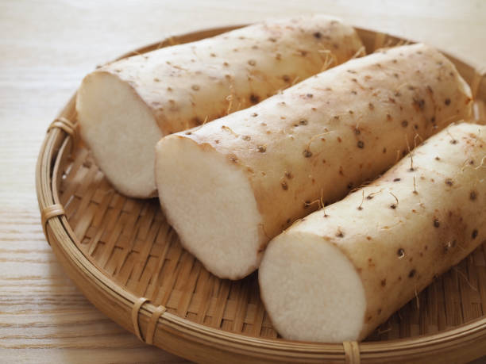
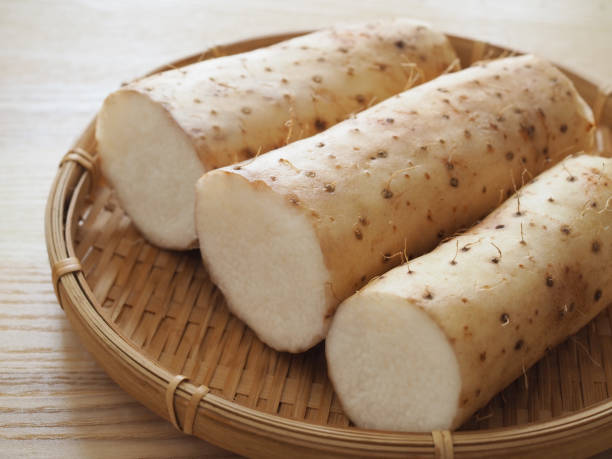

Classes of food
Food is a substance consumed by an organism for nutritional support
Carbohydrate
Carbohydrate foods are all those with sugar and starch
- Rice
- yam
- broccoli

 

Protein
Protein is a large class of complex organic chemical compounds that are essential for life
- beans
- banana
- egg